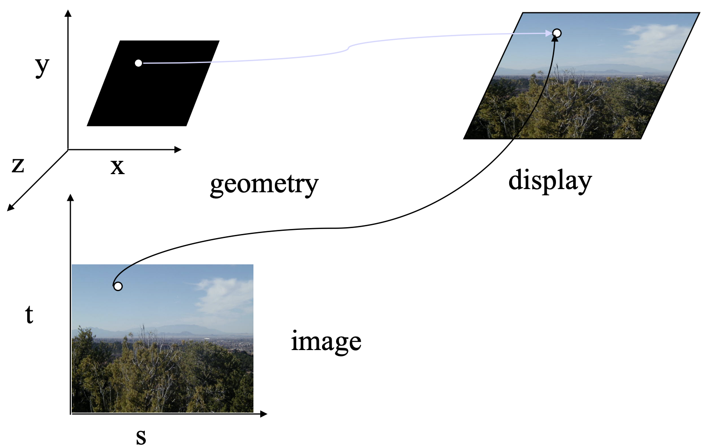
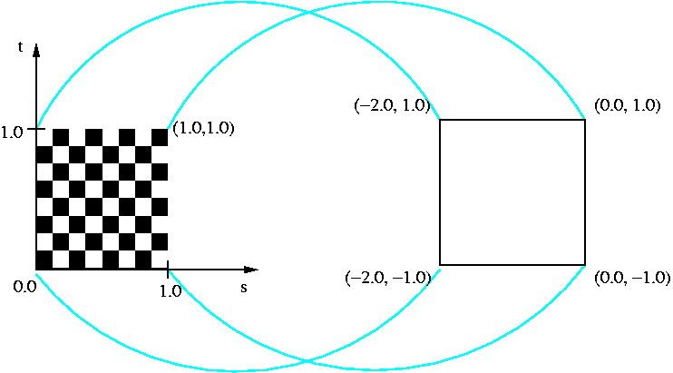
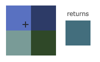
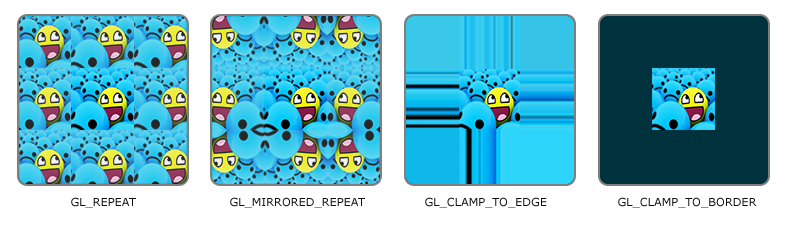
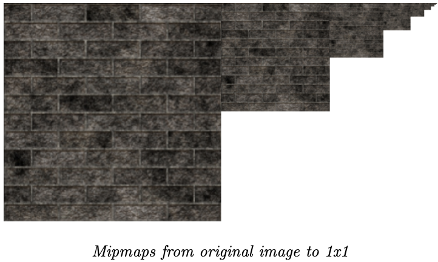
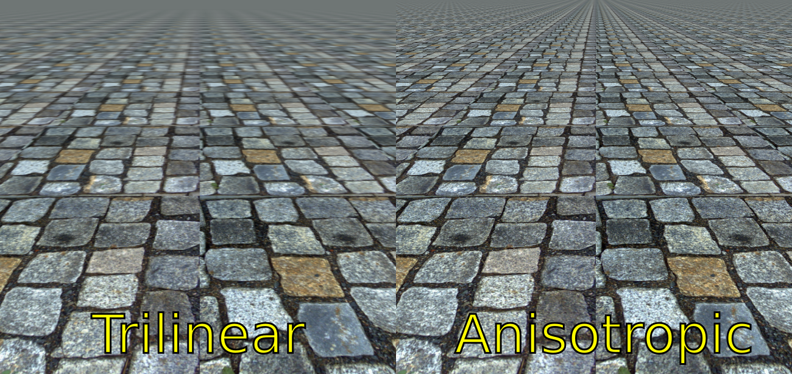
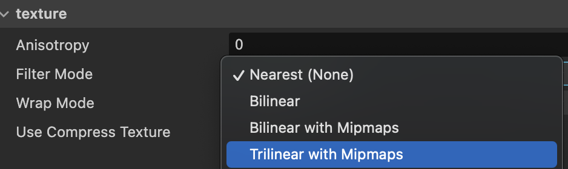
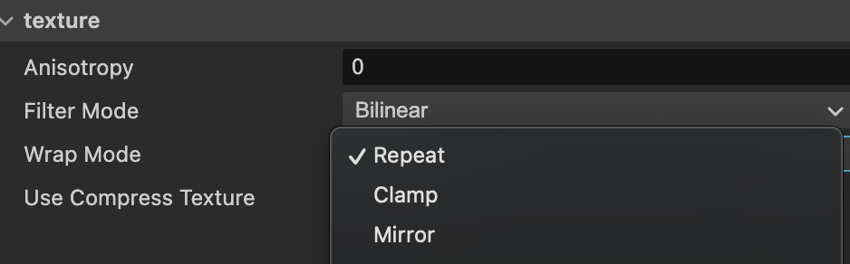

Texture + UV：把一張圖貼到模型上
- 知道 Texture 靠 UV 對位，採樣（sampling）就是「用 UV 去圖上取一個 Texel」
- 知道貼圖是 CPU 上傳進 GPU 的，
sampler2D只是它在 shader 裡的把手 - 分得清兩個基本設定：Filter Mode（放大怎麼取色）與 Wrap Mode（UV 超界怎麼辦）
- 知道 Mipmap（遠處換小圖）與 Anisotropic（斜視角救星）各解決什麼
- 會在 Cocos texture 面板把上面這些真的設定好
先看：圖怎麼貼上去

模型本身只有形狀。要有花紋、木紋、臉，就靠Texture（貼圖）—— 一張 2D 圖，貼到三角形表面上。這個技術叫 Texture Mapping。
UV：每個頂點記「我對應圖上哪一點」

第 2 課提過頂點屬性 UV：每個頂點帶一組 (u,v) ∈ [0,1]，指向貼圖上的一點。 u 是水平、v 是垂直，範圍都是 0～1（跟貼圖多大解析度無關）。 光柵化把 UV 內插到每個片段（第 5 課），Fragment Shader 再拿它去取色。
採樣：用 UV 取一個 Texel
採樣（Sampling）就是第 6 課那行 texture2D(map, vTexCoord) 在做的事：
拿片段的 UV，去貼圖上讀出對應位置的一個像素——貼圖的像素有個專名叫 Texel。
UV 是 0～1 的比例，乘上貼圖解析度就是實際位置：
UV = (0.5, 0.5) 貼圖 100×100
→ 取樣位置 ≈ (0.5×100, 0.5×100) = (50, 50) 讀這個 Texel 的顏色所以同一組 UV，貼在解析度不同的圖上，取到的是「同一個相對位置」。真正麻煩的是： UV 內插後常常不會剛好落在某個 Texel 正中央，甚至超出 0～1——這就要靠下面兩個設定決定怎麼辦。
sampler2D 從哪來：CPU 上傳、GPU 收圖
第 6 課的 shader 裡有一行 uniform sampler2D diffuseMap;——這張圖到底是怎麼進到 GPU 的？
跟第 2 課的頂點資料同一套路，都是 CPU 在 Application 階段先準備好：
- CPU 讀圖檔（PNG / JPG…），解碼成原始像素。
- 上傳到 GPU 顯存，成為一個「貼圖物件」——之後每幀直接用，不再重讀檔。
- 這節課講的 Filter / Wrap / Mipmap 設定，就掛在這個貼圖物件上。
- 繪製時把貼圖物件綁定給 shader——
sampler2D就是它在 shader 裡的「把手」，texture2D()靠這個把手取色。
sampler2D 不是圖檔路徑、也不是圖的內容——它是「一張已經住在顯存裡的貼圖」的把手。
貼圖沒出來時值得先問：這張圖真的有被上傳並綁定嗎？還是 shader 拿到的是一個空把手？
設定一：Filter Mode（放大時怎麼取色）
當一個 Texel 被放大到蓋住好幾個螢幕像素，UV 落在格與格之間，該取哪個顏色？


- Nearest — 直接取最近那格 → 銳利。像素風遊戲要的就是這個。
- Linear — 鄰近格內插平均 → 平滑。一般寫實貼圖用這個。（Cocos 面板裡叫 Bilinear，就是 Linear。）
設定二：Wrap Mode（UV 超出 [0,1] 怎麼辦）
UV 不一定乖乖待在 0～1。故意設成 0～4 想貼滿地板、或算歪了超出去，Wrap Mode 決定超界時怎麼取：

- Repeat — 取小數部分重複貼。磁磚地板、牆面這種要無縫鋪滿的用它。
- Mirror — 每重複一次翻轉一次，接縫比較不明顯。
- Clamp — 超出就夾在邊界、一直取邊緣那格。UI、不該重複的單張圖用它，避免邊緣長出接縫怪色。
Mipmap：遠處自動換小張

物件離很遠時，一整張大貼圖被壓進螢幕上小小幾個像素——這時硬取樣會閃爍、鋸齒（shimmering）。 Mipmap 是預先做好一組逐級縮小的貼圖，GPU 依物件在螢幕上占多大，自動挑一張大小最合適的來取樣。
Anisotropic Filtering：斜視角的救星

像地板、道路這種以很斜的角度看過去的表面，Mipmap 為了防閃會挑偏小的圖，結果遠處被過度模糊。 Anisotropic Filtering（各向異性過濾）會沿著被拉長的方向多取幾個樣本，把斜向紋理救回清晰。
對應到 Cocos：texture 面板怎麼設
上面這些在 Cocos Creator 裡，就是選一張貼圖後 Inspector 面板上的幾個下拉：


| 面板欄位 | 選項 | 對應到這課 |
|---|---|---|
| Filter Mode | Nearest (None) Bilinear Bilinear with Mipmaps Trilinear with Mipmaps |
Nearest = 最近點（像素風） Bilinear = Linear 平滑 + Mipmaps = 順便開 Mipmap Trilinear = 連 Mipmap 兩層之間也內插（最平滑） |
| Wrap Mode | Repeat / Clamp / Mirror | 就是上面的環繞三選項 |
| Anisotropy | 數字（0 = 關） | 各向異性過濾強度，調高改善斜視角 |
快速確認
Q1 片段的 UV = (0.25, 0.75)，貼圖解析度 200×200。採樣到的 Texel 位置約在？
Q2 做一款像素風遊戲，貼圖放大後要保持一格一格的銳利，Filter Mode 選？
Q3 幫地板貼磁磚紋理，UV 特意設成 0～8 想無縫鋪滿。Wrap Mode 選？
Q4 在 Cocos 面板，你想要「線性平滑 + 遠處開 Mipmap 防閃」。Filter Mode 該選哪個？
原始資料 / 延伸閱讀
- 本課改寫自 遊戲繪圖_04_Texture.md
- Cocos 面板屬性：Cocos Creator — Texture
- 推薦閱讀：LearnOpenGL — Textures
貼圖跑掉、UV 接縫想追根因？問你的教學 agent（/teach）。